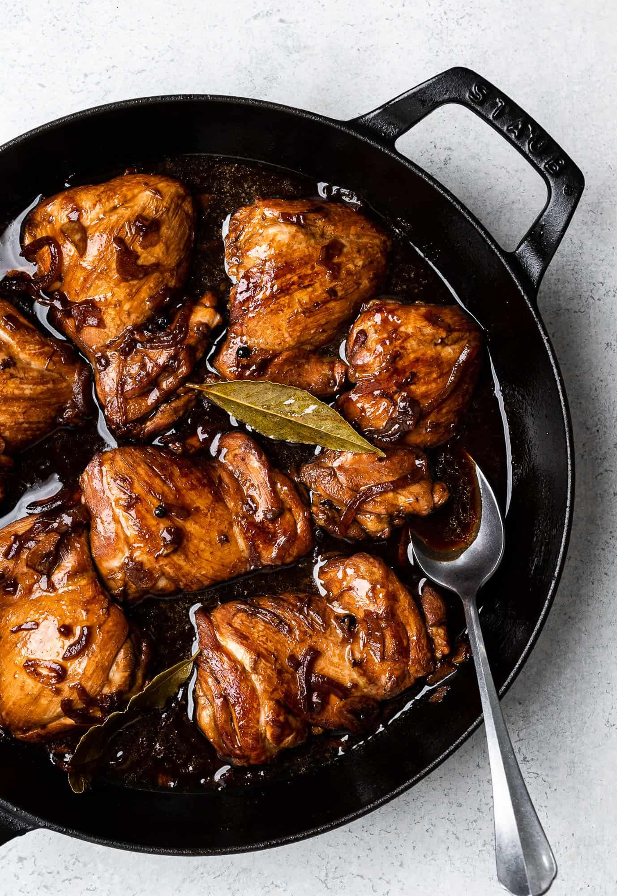
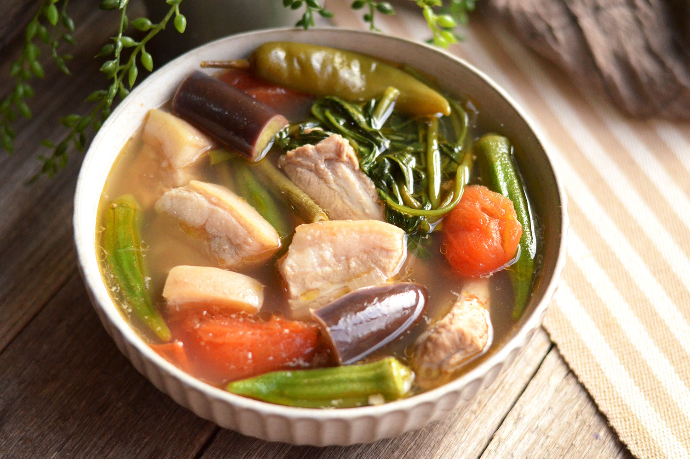
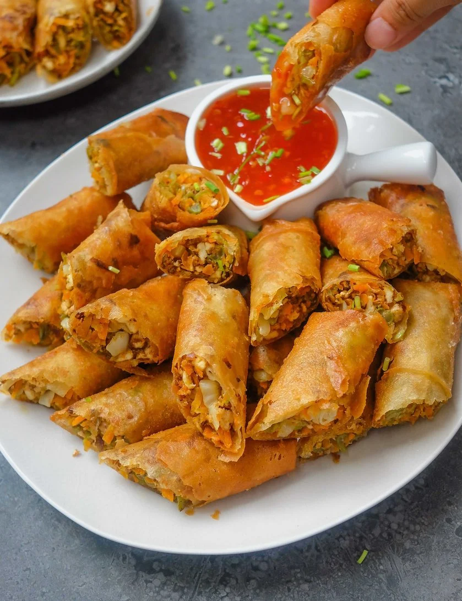
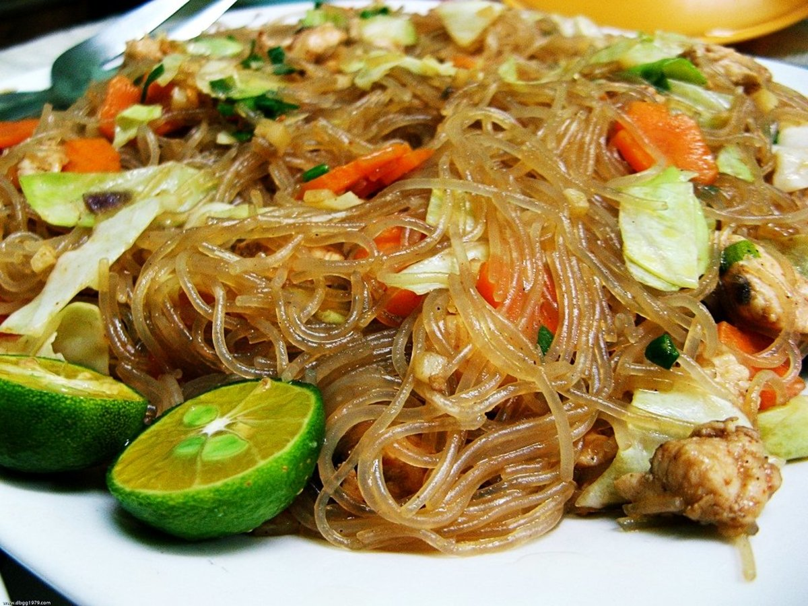
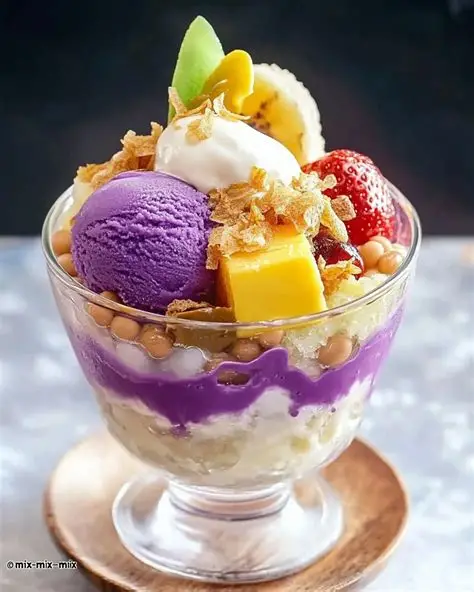
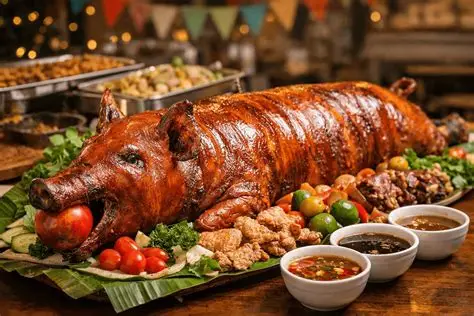

Explore the Taste of the Philippines
From savory classics to sweet desserts, Filipino food is full of flavor, color, and comfort.

Chicken Adobo

Sinigang

Lumpia

Pancit

Halo-Halo

Lechon
Why Filipino Food?
Filipino cuisine is a beautiful mix of salty, sour, sweet, and savory flavors. Popular dishes like adobo, sinigang, lumpia, pancit, halo-halo, and lechon are often served during family gatherings, celebrations, and holidays.